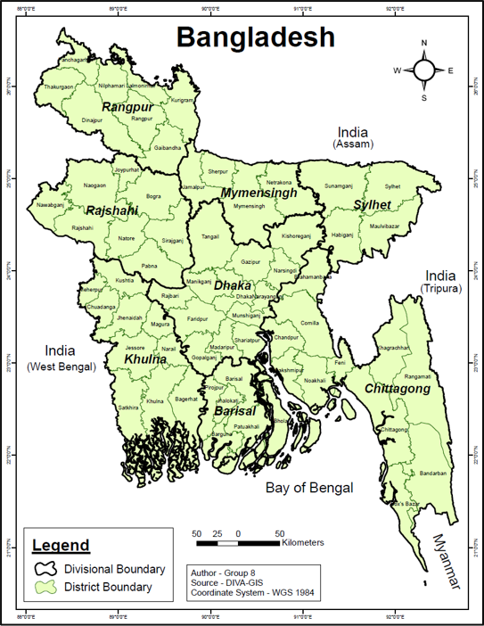
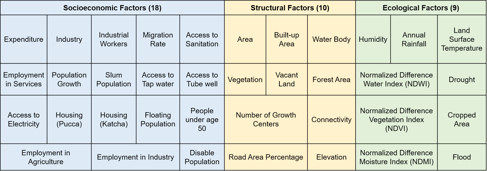
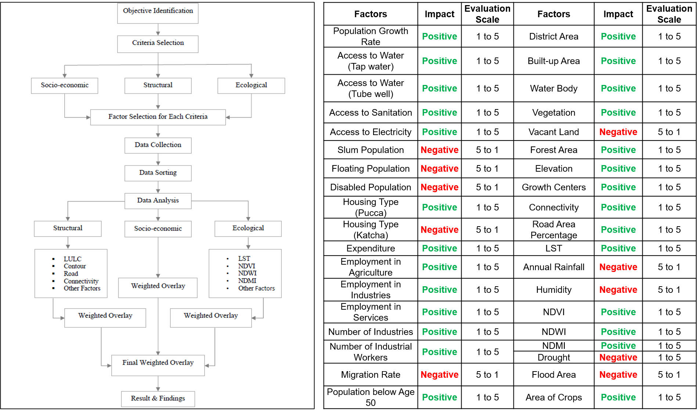
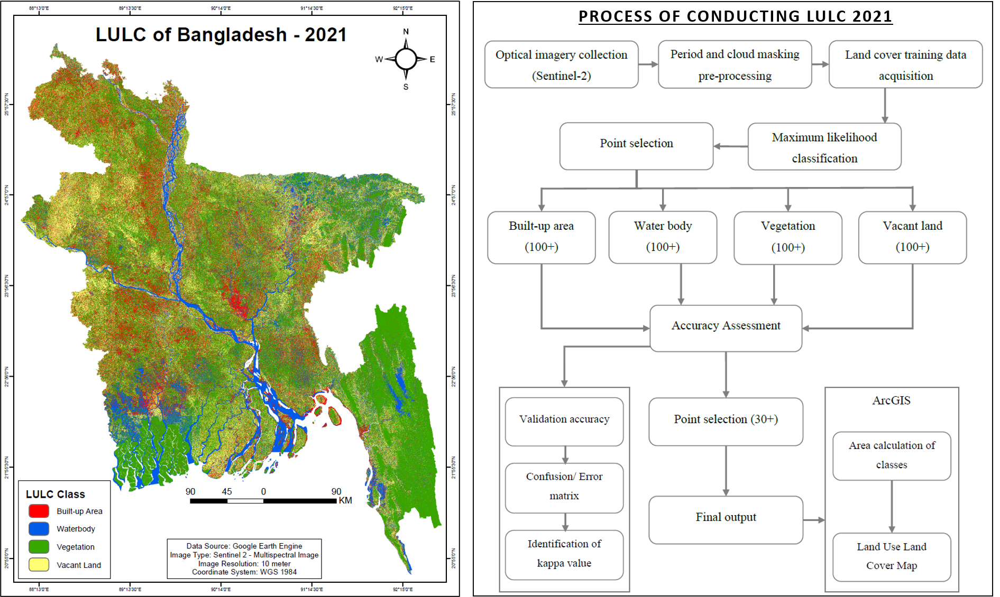
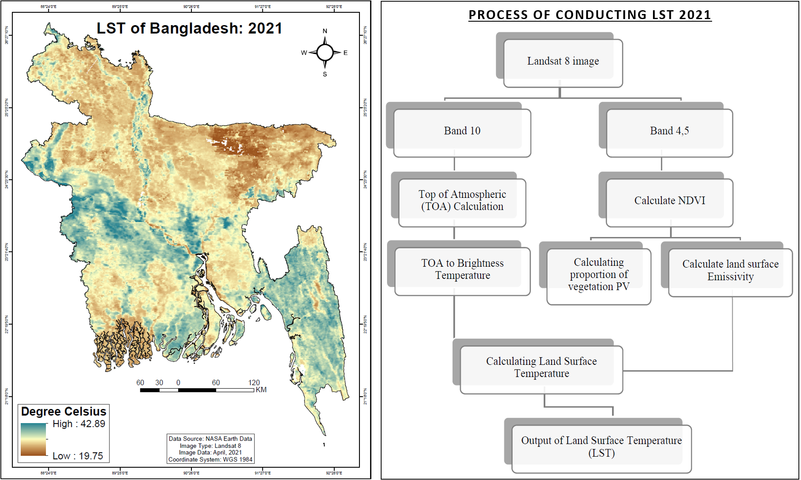
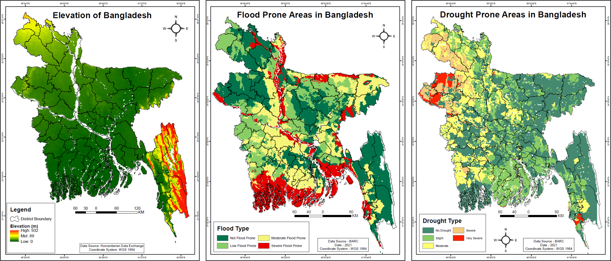
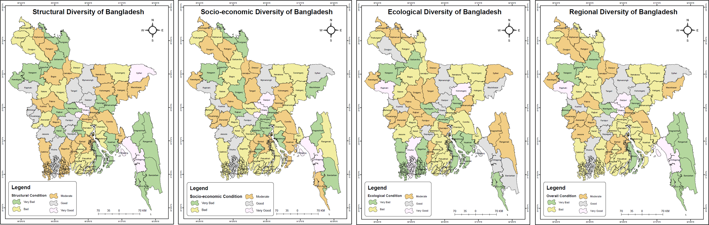

There are two specific objectives of this study. One is to assess the regional diversity of Bangladesh through a multi-criteria spatial analysis combining socio-economic, structural, and ecological indicators. The other one is to identify which districts of Bangladesh are underdeveloped, which ones are developed and which ones are developing.
Bangladesh, located in the Ganges–Brahmaputra delta, is a densely populated country with marked regional differences shaped by environmental, economic, and social conditions. While major cities like Dhaka have seen rapid growth with better infrastructure, services, and employment opportunities, many peripheral regions remain comparatively underdeveloped. This imbalance is influenced by uneven industrial concentration, limited access to healthcare and basic services, and varying ecological conditions such as flooding, salinity, drought, and extreme rainfall across different parts of the country.
These contrasts create a clear pattern of regional diversity, where some areas continue to lag behind despite overall national progress. Understanding these spatial differences is important to identify gaps in development and to support more balanced planning. This study focuses on examining such regional disparities across Bangladesh to highlight the underlying factors and guide more equitable distribution of resources and opportunities.






